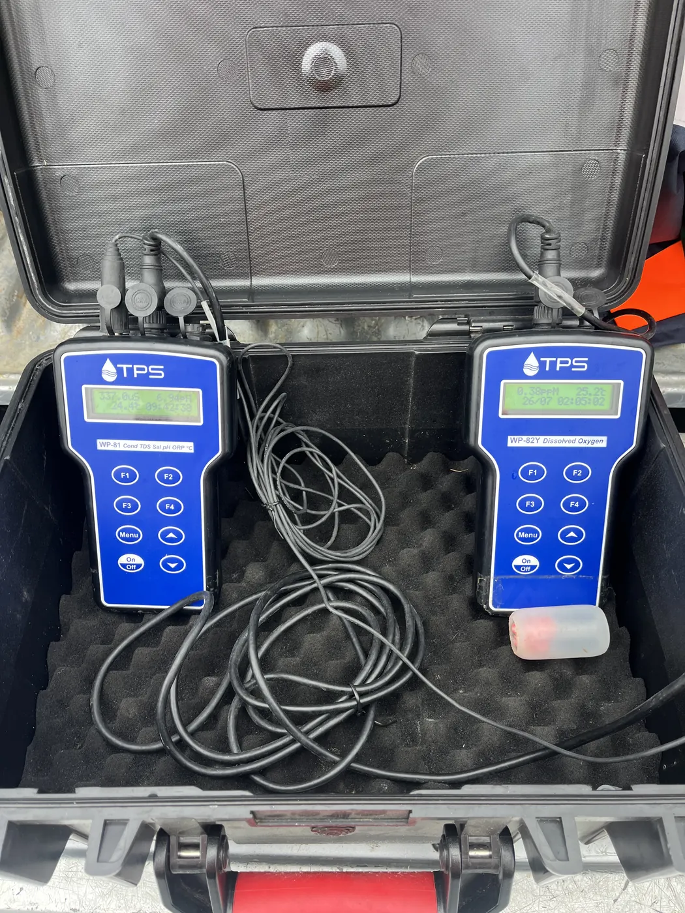

Environmental Assessment & Monitoring
Understanding environmental conditions through investigation, sampling and analysis.
- Water quality monitoring
- Soil and sediment sampling and testing
- Air quality monitoring
- Environmental investigations and assessments
- Environmental reporting and data analysis